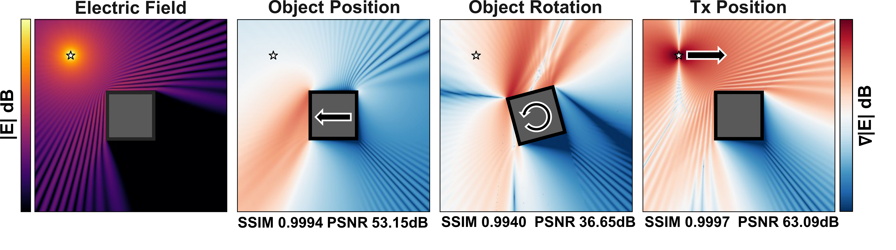
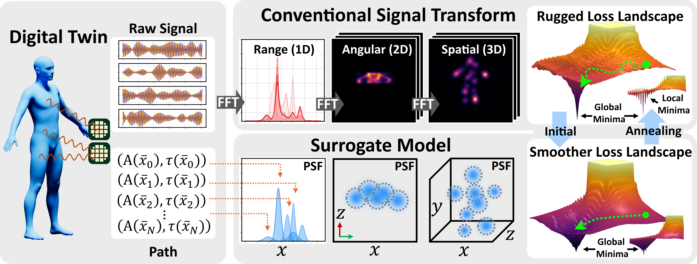
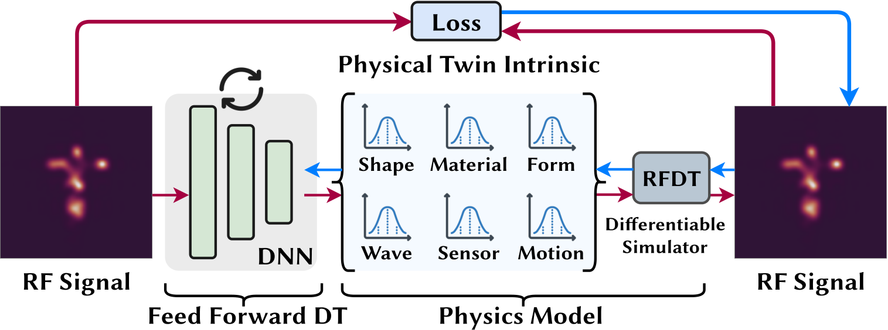
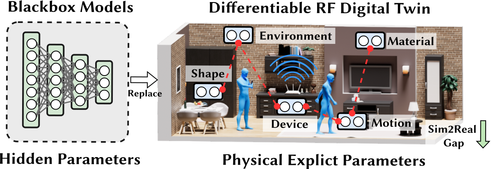

As wireless systems evolve toward 6G, the ability to construct faithful digital replicas of physical RF environments becomes essential. Yet existing RF simulators operate as black boxes — they can predict signal propagation in a given scene, but cannot answer the inverse question: what scene configuration produced the signals we observe? Differentiable rendering, which has transformed computer vision and graphics, offers a principled solution. By making every step of the simulation differentiable, we can backpropagate through the entire RF pipeline and optimize scene parameters directly from measurements. This closes the loop between the digital twin and its physical counterpart, enabling capabilities that were previously impossible.
A central goal of differentiable RF simulation is to compute accurate gradients with respect to geometric scene parameters — the position, orientation, and shape of every object in the environment. These gradients are what allow an optimizer to iteratively deform a digital twin until its simulated signals match real-world measurements. However, RF ray tracing is inherently discontinuous in geometry: when a reflection point crosses an object boundary, the signal contribution switches abruptly between on and off, producing undefined gradients at exactly the points that matter most.
Prior approaches resort to heuristic smoothing — artificially softening geometry or adding fictitious roughness — which distorts phase accuracy and introduces biased gradients. We observe that edge diffraction, a well-established physical phenomenon, already provides the smooth transition we need. As a specular reflection point approaches an object edge, the diffracted field naturally and continuously interpolates the signal contribution to zero. By leveraging this physics-grounded transition function, RFDT achieves exact differentiability of both direct and reflected fields with respect to geometric parameters — object positions, rotations, vertex coordinates — no heuristic smoothing required. The resulting gradients are unbiased and maintain wavelength-scale precision.

Gradients w.r.t. different scene parameters (object position, rotation, and Tx position), with finite difference as ground truth. RFDT achieves SSIM up to 0.9997 and PSNR up to 63.09 dB.
Even with correct gradients, optimizing RF signals is challenging due to the periodic nature of electromagnetic waves. The Fourier-domain transforms used in radar and communication systems (e.g., FFT for range estimation, OFDM demodulation) further amplify this issue, creating dense sidelobes and local minima that trap gradient-based optimizers.
We address this with signal-domain surrogate models. Instead of differentiating through the raw FFT output, we replace the transform-domain representation with smooth surrogates — such as point spread functions (PSF) and Dirichlet kernels — that faithfully approximate the signal structure while eliminating the spurious local minima. This yields a smooth optimization landscape.

Signal-domain transform surrogate. By replacing FFT-domain representations with smooth surrogates (PSF, Dirichlet), the optimization landscape becomes convex-like, enabling reliable convergence.
With a fully differentiable RF simulator, gradients flow freely from observed signals back to any scene parameter. This unlocks a unified framework for problems that previously required separate, specialized solutions. A pre-trained neural network can be embedded as a learned prior within the optimization loop, combining physics-grounded simulation with data-driven knowledge. The same pipeline supports both inverse problems (reconstructing 3D geometry from radar measurements) and forward optimization (finding optimal hardware configurations for communication systems).

Enhancing neural networks. RFDT acts as a physics-informed regularizer that backpropagates through the simulation loop, enabling test-time adaptation of pre-trained models to unseen environments without any labeled data.

Replacing neural networks. With fully differentiable scene parameterization, RFDT directly optimizes geometry, materials, and RF attributes end-to-end — achieving interpretable, physics-grounded solutions without black-box learned components.